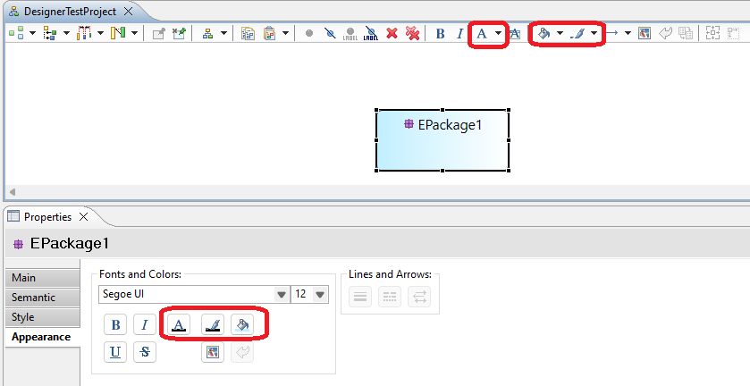
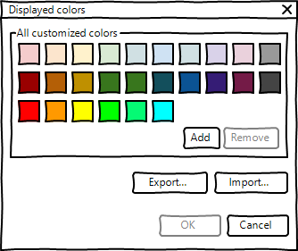
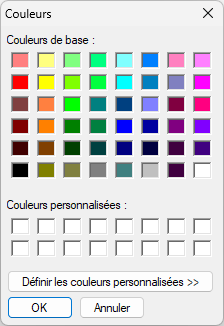
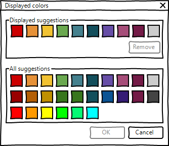
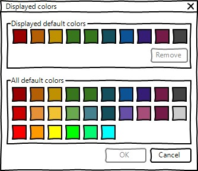

Summary: This document describe the new feature to homogenize color-change menus and make the color change feature more accessible.
| Version | Status | Date | Authors | Changes |
|---|---|---|---|---|
| v0.1 | DRAFT | 2023-11-06 | gplouhinec | Initial version. |
| v1.0 | ACCEPTED | 2023-12-18 | gplouhinec | Persist colors in aird model, add tooltips and Drag and Drop colors in palette. |
Relevant tickets :
Currently, element colors can be modified via the diagram toolbar, or via the Properties view in the Appearance tab. It is therefore possible to modify:

The behavior between the buttons in the Properties view and the diagram toolbar is not consistent:
The idea of this improvement is to homogenize the color-change menus and make them more accessible.
Several improvements are proposed to homogenize the menus:
A few improvements are proposed to make these menus more accessible:
The
org.eclipse.sirius.diagram.ui.tools.api.color.ColorManager interface will probably evolve to get and modify preferred colors of each category.
The
org.eclipse.sirius.diagram.ui.tools.api.preferences.SiriusDiagramUiPreferencesKeys enum may probably evolve to handle preferred colors of each category.
Last used
Customized
Suggested
Default
More..." button of «Customized» category, a dialog
Displayed colors appears:

All customized colors" group. All these colors are persisted in the aird file as EAnnotations.
All customized colors" list. If the color does not exist in this list, it must be added and selected.
Add", the system’s color customization dialog is invoked, when a color is selected in the system dialog, the color is added to «All customized colors».

Remove", the selected color is removed.
Import and
Export buttons invoke a file system navigation dialog to load an existing color configuration, or export the current configuration. This feature allows users to change color configuration at any time as required. This feature is not a priority and may be proposed in future versions of Sirius.
More..." button of «Suggested» category, a dialog
Displayed colors appears:

Displayed suggestions" group, a subset of colors of the group below is displayed. These colors are persisted in the aird file as EAnnotations.
Remove", the selected color is removed from "Displayed suggestions"
All suggestions" group.
More..." button of «Default» category, a dialog
Displayed colors appears:

Displayed default colors" group, a subset of colors of the group below is displayed. These colors are persisted in the aird file as EAnnotations.
Remove", the selected color is removed from "Displayed default colors"
All default colors" group.
For each of these dialogs, if a color is selected and the user click the «OK» button, the selected color is added to the «Last used colors» category and applied to the color feature of the diagram element.
Font Color" will be added for the diagram toolbar menu, Appearance Properties View menu, popup-menu and Diagram-window-menu.
Fill Color" will be added for the diagram toolbar menu, Appearance Properties View menu, popup-menu and Diagram-window-menu.
Line Color" will be added for the diagram toolbar menu, Appearance Properties View menu, popup-menu and Diagram-window-menu.
Import a color configuration to replace the existing one.".
Export current configuration.".
Add a custom color using the system color configuration tool.".
Removes a preferred color.".
Drag and drop a color from "All colors" to "Displayed colors" to add it to the list of displayed colors." will be added to «All colors» group.
Drag and drop a color to reorder the list of displayed colors." will be added to «Displayed colors» group.
List of last colors used. Not persisted in model." will be added.
List of customized colors. Persisted in model." will be added.
List of suggested colors. Persisted in model." will be added.
List of default colors. Persisted in model." will be added.
Other menus related to the same features need to be reworked with the color palette and verified during testing.
A new popup menu "
Memorize custom color in the model" in a new section will be added. It will be accessible via a right-click on a diagram element, Above the «Align» menu. This menu will add the color of the selection to the Customized colors category, at first position.
The user documentation of the Appearance preference page will be updated with the deleted «Display viewpoint colors» checkbox screenshot and text.
The user documentation for the color and font properties of diagram elements must be completed.
Automatic tests cannot be run in the Properties view. It is also not possible to test system dialog boxes.
Junit tests will be developed to test the new APIs.
SWTBot tests will be developed to test interactions with the diagram toolbar, popup menu and Eclipse window menu.
Existing tests that change the color of diagram elements will be adapted.